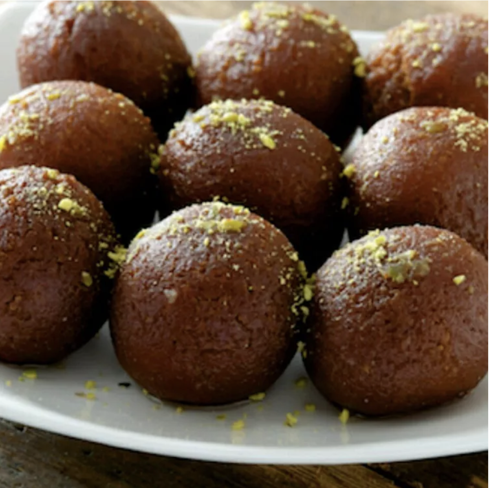

Gulabjamun

This is Gulab jamun. An indian sweet dish.
It is made from milk solids and sugar. It is a very popular sweet dish in India.
It is very easy to make and very delicious to eat
Ingrediants
- milk solid
- Sugar
- Groundflour
- Oil
Steps
- Take milk solid and groundflour in a bowl and mix them well
- Make small balls from the mixture
- Heat oil in a pan and fry
the balls till they turn golden brown
Back to Home